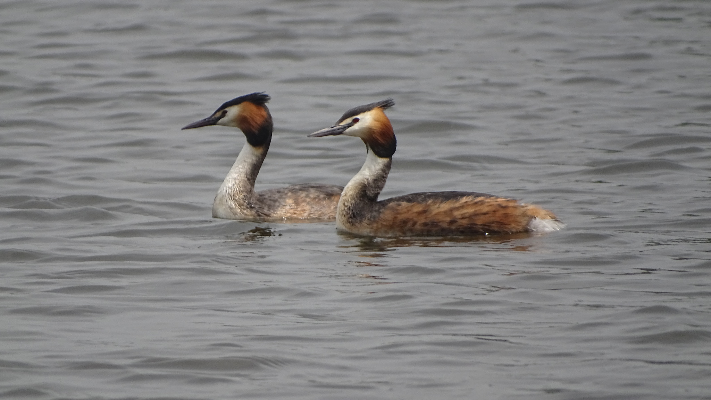

Podiceps cristatus — غواص البحيرات بين التعشيش المحلي والزيارات الشتوية
الهوية والتعرف
الغطاس المتوج الكبير، Podiceps cristatus، من فصيلة الغطاسيات ورتبة الغطاسيات، وليس من البطيات رغم اشتراكه معها في البحيرات. تثبت AviList 2026 هذا الاسم العلمي. جسمه منخفض على الماء، وعنقه طويل نحيل، ومنقاره مدبب كالحربة. موضع ساقيه المتأخر يساعده على الدفع تحت الماء لكنه يجعله غير رشيق على اليابسة؛ لذا فالغوص والسباحة جزء أساسي من حياته لا سلوك طارئ.
العمر والجنس والأنواع المشابهة
في كسوة التكاثر يحمل البالغ عرفًا أسود مزدوجًا وطوقًا وجهيًا كستنائيًا وأسود. يتشابه الجنسان، ولا يحدد حجم العرف وحده الجنس بثقة. شتاءً يختفي معظم الزخرف وتصبح الوجنتان ومقدمة العنق بيضاوين مع قبعة داكنة. للفراخ خطوط داكنة على الرأس والعنق، وقد تبقى آثارها لدى اليافع. يفصله عن الغطاس الصغير طول العنق والمنقار والبنية الأكبر؛ وعن الغطاس أسود الرقبة المنقار الأطول والأكثر استقامة والوجه المختلف. في الشتاء قد يربكه المراقب مع غواصات أخرى، فينبغي فحص الرأس والمنقار ووضع الجسم لا اللون فقط.
الموائل والغذاء والسلوك
يعتمد على بحيرات وخزانات ومسطحات واسعة نسبيًا تتوافر فيها فرائس تحت الماء، مع غطاء نباتي ملائم للتعشيش. وقد ينتقل خارج التكاثر إلى المياه الساحلية المحمية والمصبات. يصطاد الأسماك ويأخذ لافقاريات مائية، باحثًا تحت السطح ثم مبتلعًا الفريسة المناسبة. اختفاؤه المتكرر بالغوص لا يعني مغادرة الموقع؛ يفيد الانتظار الهادئ في مشاهدة نمط تغذيه دون دفعه إلى الهرب. تختلف كثافته بحسب صفاء المياه وعمقها والغذاء والإزعاج، لا بحسب مساحة البحيرة وحدها.
التكاثر ودورة الحياة
يشتهر بعروض الزوج المتقابلة وتحريك الرأس وحمل نباتات مائية في بعض مراحل العرض. يبني عشًا من مواد نباتية على الماء، مثبتًا عادة بالنباتات المحيطة. الحضنة المعتادة ثلاث إلى أربع بيضات، ويتقاسم الأبوان الحضانة ورعاية الفراخ. تحمل الفراخ الصغيرة أحيانًا على ظهر أحد الأبوين؛ وجودها هناك سلوك طبيعي وليس علامة إصابة. تتعلم الفراخ الغوص وتتلقى الغذاء قبل الاستقلال. يؤثر تقلب منسوب الماء في استقرار الأعشاش، لذلك لا يكفي وجود مساحة مائية لضمان نجاح التكاثر.
الانتشار والموسمية عربيًا
في المغرب والجزائر وتونس توجد جماعات تتكاثر محليًا، وتضاف إليها طيور شتوية؛ وتصل الشتويات أيضًا إلى ليبيا ومصر. في المشرق لا يصح وصف الجميع بعابرات: توثق المراجع تعشيشًا محدودًا في سوريا، وسجل لبنان تكاثره في عميق عام 2019، إلى جانب طيور شتوية في المياه الداخلية. تصف القائمة اللبنانية الشتاء المنتظم أساسًا من ديسمبر إلى أوائل مارس؛ لذا يكون نوفمبر زمن متابعة التحول الموسمي، لا ذروة شتوية مضمونة. أما قائمة الكويت المحدثة فتعده عابرًا وزائرًا شتويًا نادرًا، ويسجل دليل الهيئة العامة للبيئة التكاثر أيضًا؛ وهذا لا يعني جماعة مقيمة واسعة الانتشار. ولا يجوز تعميم وضع البحيرات المغاربية عليها. مشاهدة طائر صيفًا وحدها ليست إثبات تعشيش؛ يلزم عش أو فراخ أو دليل سلوكي موثق.
الدور البيئي والحماية
يصنف عالميًا «أقل إثارة للقلق» LC، مع احتمال تضرر جماعات محلية. يشارك بوصفه مفترسًا مائيًا في الشبكة الغذائية، ويحتاج إلى جودة المياه وإتاحة الفرائس ومناطق تعشيش مستقرة. من الضغوط تلوث المياه وفقد الغطاء الشاطئي والإزعاج وتقلبات المنسوب الحادة والتشابك في أدوات الصيد. ينبغي إبقاء مسافة من الأسر وتجنب قطع مسارها بالقوارب، وعدم الاقتراب من عش عائم للتصوير. لا يعني غيابه عن بحيرة أن الماء ملوث حتمًا؛ يلزم رصد منهجي قبل تفسير السبب.
المراجع
AviList 2026 — Podiceps cristatus.
BTO — BirdFacts: Great Crested Grebe.
RSPB — Great Crested Grebe.
Mediterranean Waterbirds Network — North African waterbird identification guide.
Ramadan-Jaradi and Itani — Birds of Lebanon: A Photographic Guide to 409 Species, UNDP, second edition, 2026; Ramadan-Jaradi and colleagues — Sandgrouse 42, 2020.
Jordan Journal of Natural History — annotated bird checklist of Syria.
Kuwait Environment Public Authority and IUCN Regional Office for West Asia — Conservation Directory of the Birds of Kuwait; Kuwait Ornithological Rarities Committee — Official Kuwait Bird List, September 2026.
الصورة: Andra Waagmeester — CC0-1.0.